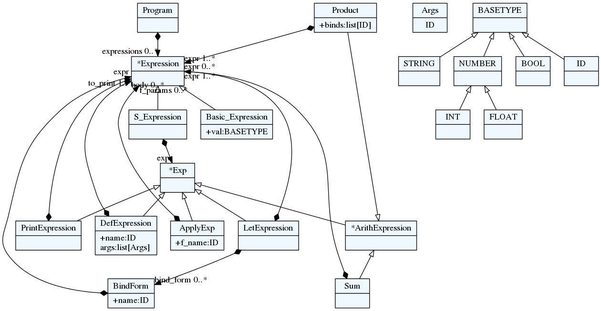
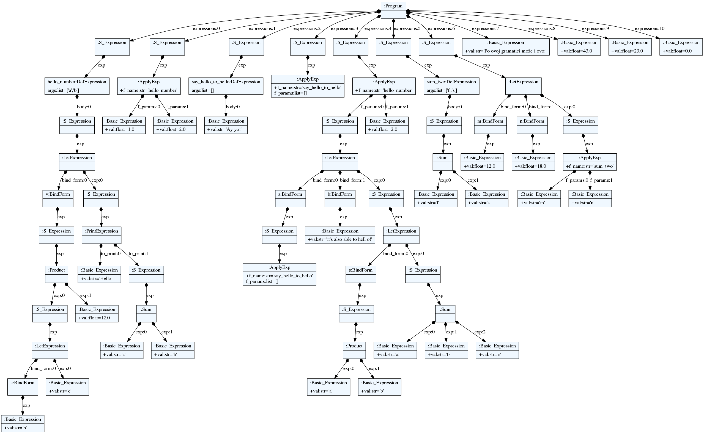

Napredne tehnike programiranja - Python

Python is a programming language that lets you work quickly and integrate systems more effectively.
1 Teorija
Svi teorijski materijali nalaze se na sajtu profesora.
2 Napredni Python
2.1 virtualenv i pip
2.2 Iteratori i generatori
def generator_foo(n): if n < 65 or n > 90: yield "Unsupported alphabetical argument" return else: letter = n while letter <= 90: yield chr(letter) letter += 1
ge = generator_foo(15)
ge.__next__()
ge.__next__()
'Unsupported alphabetical argument' Traceback (most recent call last): File "<stdin>", line 1, in <module> StopIteration
g1 = generator_foo(70)
g1.__next__() g1.__next__() g1.__next__() g1.__next__()
'F' 'G' 'H' 'I'
g2 = generator_foo(88)
g2.__next__()
g2.__next__()
g2.__next__()
g2.__next__()
g2.__next__()
'X' 'Y' 'Z' Traceback (most recent call last): File "<stdin>", line 1, in <module> StopIteration Traceback (most recent call last): File "<stdin>", line 1, in <module> StopIteration
g3 = generator_foo(80) for l in g3: print(l)
>>> ... ... P Q R S T U V W X Y Z
A to bi bilo zapravo:
g3 = generator_foo(80) iterator_od_g3 = g3.__iter__() for l in iterator_od_g3: print(l)
>>> >>> ... ... P Q R S T U V W X Y Z
Tako ako hoćemo da implementiramo svoju generatorsku klasu možemo:
class Alphabet: def __init__(self, num): self.letter = chr(num) self.num = num def __iter__(self): if self.num < 65 or self.num > 90: yield Exception return else: for l in range(self.num, 91): yield Alphabet(l)
a = Alphabet(85) for l in a: print(l.letter)
>>> ... ... U V W X Y Z
2.3 Ostale specijalne metode
__contains__(in)__getitem__([])__getattr__i__getattribute__
2.4 Deskriptiori
2.5 Dekoratori
def greet(func): def wrapper(arg): return "Hello " + func(arg) return wrapper @greet def id(a): return a def greet_side_effect(func): def wrapper(arg): print("Hello!") return func(arg) return wrapper @greet_side_effect def id_side(a): return a + " students"
id("all of you!")
'Hello all of you!'
id_side("Our")
Hello! 'Our students'
Mogu se dekorisati i metode:
def dec(f): def w(s, arg): print("from dec: %d" % s.a) return f(s, arg) return w class A: def __init__(self, a): self.a = a @dec def do_something(self, arg): return self.a + arg
a = A(1)
a.do_something(2)
from dec: 1 3
2.6 functools
partialreducezipZip može npr. biti koristan ako od dve liste želimo da napravimo rečnik:
a = ['a', 'b', 'c', 'd'] b = [1, 2, 3, 4] d = dict(zip(a, b)) print(d) d2 = dict(zip(b,a)) print(d2)
>>> >>> >>> {'a': 1, 'b': 2, 'c': 3, 'd': 4} >>> >>> {1: 'a', 2: 'b', 3: 'c', 4: 'd'}map
2.7 itertools
chainimport itertools as it a = "abc" i = [1, 2, 3] for e in it.chain(a, i): print(e)
>>> >>> >>> >>> ... ... a b c 1 2 3
takewhileimport itertools as it for i in it.takewhile(lambda x: x < 10, range(1, 20)): print(i)
>>> ... ... 1 2 3 4 5 6 7 8 9
dropwhileje komplemet odtakewhiled = it.dropwhile(lambda l: l < 'U', [chr(i) for i in range(65, 91)]) for i in d: print(i)
>>> ... ... U V W X Y Z
groupby
2.8 High performance kolekcije
dequefrom time import time from collections import deque def timed(f): def w(): bg = time() f() en = time() print("time elapsed : " + str(en - bg)) return w small = 10 large = int(10e6) l_small = list(range(small)) l_large = list(range(large)) d_small = deque(range(small)) d_large = deque(range(large)) @timed def a_list(): l_small.pop() @timed def a_larger_list(): l_large.pop() @timed def a_deque(): d_small.pop() @timed def a_larger_deque(): d_large.pop() a_list() a_larger_list() a_deque() a_larger_deque()
time elapsed : 2.384185791015625e-06 time elapsed : 1.6689300537109375e-06 time elapsed : 1.1920928955078125e-06 time elapsed : 1.1920928955078125e-06
2.9 Višestruko nasleđivanje
2.10 Meta klase
2.11 Zadaci
- Napraviti klasu
GithubUserčiji svaki objekat pri konstrukciji dobija ime, prezime i login podatke za GitHub. Iteriranjem kroz korisnika se dobijaju korisnici koje dati korisnik prati. Koristite pygithub za komunikaciju sa GitHub-om. - Neka klasa ima i metodu
peekkoja vraća generator kroz koji kada iteriramo dobijamo jedno po jedno ime repozitorijuma koje jeGithubUseroznačio zvezdicom. - Dodati
GithubUserklasi poljemore_infokoje je rečnik sa podacimanf_follower(ime prvog pratioca),nf_watched(ime prvog watched repozitorijuma). Omogućiti da se imenu prvog repozitorijuma pristupa sagu.nf_watched. - Implementirati poređenje
GithubUser-a tako da je "veći" onaj koji ima više pratilaca. - Dekorisati metodu
peekdekoratorom koji loguje(ispisuje) emailGithubUser-a u fajl. - Koristeći funkciju
reducenapravite string oblika"p1, p2, p3 ..."gde supimena svih pratilacaGithubUser. - Koristeći funkciju
filternapraviti metoduGithubUser-a koja vraća imena repozitorijuma označenih zvezdicom koji su napisani u Python-u (napisanim u Python-u se smatraju svi repozitorijumi koji urepo.get_languages()imaju ključ "Python"). - Koristeći funkciju
mapnapraviti metoduplain_reposGithubUsere-a koja vraća listu imena svih njegovih repozitorijuma ali bez korisničkog imena na početku(repozitorijumi su inače oblikauser_name/repo_name). - Napraviti metodu
endless_reposGithubUser-a koja vraća beskrajni iterator na sve repozitorijume koje korisnik prati koristeći njegovuself.__iter__metodu.
2.12 Rešenja
get_followersfrom github import Github class GithubUser: def __init__(self, name, surname, username, paswd=None): self.name = name self.surname = surname self.username = username self.paswd = paswd self.gh_user = Github(username, paswd or self.get_pass()).get_user() def __iter__(self): for fl in self.gh_user.get_followers(): yield fl def get_pass(self): with open('/home/novak/Desktop/pass.github', 'r') as f: return f.readline().strip() def peek(self): for repo in self.gh_user.get_starred(): yield repo.full_name
[u.login for u in GithubUser('Novak', 'Boskov', 'novakboskov')]
['MihailoIsakov', 'danielkupco', 'cusspvz', 'angusshire', 'mbejn', 'igordejanovic', 'amittendulkar', 'coka', 'strika', 'MilosSimic', 'AleksandarRakic', 'nikoladakic', 'C0mpy', 'Mijura', 'stefanplazic', 'yalu']
for r in GithubUser('Novak', 'Boskov', 'novakboskov').peek(): print(r)
... bscarlet/llvm-general commercialhaskell/stack alwx/luno-react-native status-im/status-react diagrams/diagrams-lib adamgundry/ghc-proposals mrkkrp/ebal haskell/cabal ghc/ghc davidbrewer/xmonad-ubuntu-conf vicfryzel/xmonad-config haskell/ThreadScope dmatveev/shampoo-emacs facebook/Haxl haskell/c2hs agda/agda cisco/ChezScheme emacsfodder/move-text Wilfred/remacs clash-lang/clash-compiler retro/graphql-builder vermiculus/magithub skeeto/emacsql defunkt/coffee-mode ...
reduce(lambda a, n: a + str(n.name) + ",", nb.get_followers(), "")itertools.cycle
3 Parsiranje
Parsiranje je proces analize teksta (jezika) prema formalnim pravilima (gramatikama) koje za rezultat ima jedno ili više stabala parsiranja koja predstavljaju sintaktičke strukture analiziranog teksta.

3.2 Zadaci
Dato je parče koda u čudnom programskom jeziku Plisp.
(def hello_number (a b) (let [v (* (let [a b] c) 12)] (print "Hello " (+ a b)))) (apply hello_number 1 2) (def say_hello_to_hello () "Ay yo!") (apply say_hello_to_hello) (apply hello_number (let [a (apply say_hello_to_hello) b "it's also able to hell o!"] (let [s (* a b)] (+ a b s))) 2) (def sum_two (f s) (+ f s)) (let [m 12 n 18] (apply sum_two m n)) "Po ovoj gramatici može i ovo:" 43 23.0 0
U istom tom programskom jeziku napisan je i program koji na internetu ume da pronađe besplatne kupone za doživotnu kućnu dostavu Index sendviča™.
Svi vole Index sendviče™.
Međutim, tu je i jedan problem. Program je procureo u javnost u nedovršenoj verziji i Vi treba da ga dovršite.
Međutim i tu ima jedan problem. Program je toliko poverljiv da čak ne postoji ni tooling za njegov programski jezik. Kako biste počeli da radite na programu prvo morate sebi da napravite razvojno okruženje. Za početak će biti dovoljna statička analiza.
Napišite parser za Plisp koristeći TextX, a potom napravite
Python program sa funkcijom spot_lets kojoj prosledite TextX
model programa a on Vam vrati listu koja ukazuje na kojim
pozicijama u programu se nalaze let izrazi. Funkcija spot_lets
za program gore treba da vrati:
[(['v'], (2, 4)), (['a'], (2, 15)), (['a', 'b'], (15, 9)), (['s'], (17, 15)), (['m', 'n'], (24, 2))]
Što znači da program ima dve let naredbe na liniji 2, koloni 4 (i
u tom let-u binding za simbol v) i po jednu na linijama 15,
17, 24.
3.3 Rešenja
Gramatika jezika je data sa:
Program: expressions*=Expression; Expression: Basic_Expression | S_Expression; Basic_Expression: val=BASETYPE; S_Expression: '(' exp=Exp ')'; Exp: DefExpression | PrintExpression | ArithExpression | LetExpression | ApplyExp; LetExpression: 'let' '[' bind_form+=BindForm ']' exp*=Expression; BindForm: name=ID exp=Expression; PrintExpression: 'print' to_print+=Expression; ArithExpression: Sum | Product; DefExpression: 'def' name=ID '(' args*=Arg ')' body*=Expression; ApplyExp: 'apply' f_name=ID f_params*=Expression; Arg: ID; Sum: ('+'|'-') exp+=Expression; Product: '*' exp+=Expression;
Ovo možemo vizualizovati korišćenjem TextX-a i GraphViz-a:
$ textx visualize plisp.tx ... $ dot -Tpng -O plisp.tx.dot

Takođe možemo vizualizovati i mogram:
$ textx visualize plisp.tx example.plisp ... $ dot -Tpng -O example.plisp.dot

U nastavku je data jedna implementacija funkcije spot_lets. S
obzirom da je gramatika rekurzivna i ovaj problem je opisan
rekurzivno. Pogledajte kako funkcija spot_lets_single_exp poziva
spot_lets i obrnuto, ovo ze naziva međusobna rekurzija (što je
vrsta indirektne rekurzije).
from textx.metamodel import metamodel_from_file from collections import Iterable from functools import reduce mm = metamodel_from_file("plisp.tx") m = mm.model_from_file("example.plisp") def gn_Program(e): return e.expressions def gn_Basic_Expression(e): return None def gn_S_Expression(e): return e.exp def gn_BindForm(e): return e.exp gn_options = {'Basic_Expression': gn_Basic_Expression, 'S_Expression': gn_S_Expression} def gn_LetExpression(e): bfs = [gn_BindForm(bf) for bf in e.bind_form] exs = [gn_options[ex.__class__.__name__](ex) for ex in e.exp] return bfs + exs def gn_PrintExpression(e): return e.to_print def gn_DefExpression(e): return e.body def gn_ApplyExp(e): return e.f_params def gn_Sum(e): return e.exp def gn_Product(e): return e.exp gn_options.update({'Program': gn_Program, 'LetExpression': gn_LetExpression, 'BindForm': gn_BindForm, 'PrintExpression': gn_PrintExpression, 'DefExpression': gn_DefExpression, 'ApplyExp': gn_ApplyExp, 'Sum': gn_Sum, 'Product': gn_Product}) def get_next_exps(e): """Return all successor expressions of a given expression.""" return gn_options[e.__class__.__name__](e) def is_let(exp): return exp.__class__.__name__ == 'LetExpression' def get_all_let_bindings(l): """Extract all bindings from let.""" return [b.name for b in l.bind_form] def spot_lets_single_exp(e, lets=[]): if not e: return lets if is_let(e): pos = mm.parser.pos_to_linecol(e._tx_position) return spot_lets(get_next_exps(e), \ lets + [(get_all_let_bindings(e), pos)]) else: return spot_lets(get_next_exps(e), lets) def spot_lets(e, lets=[]): """Spot all the let expressions in the program. Return list of tuples ([bind_variable+], position_of_let_expression). """ def reducer(ls, ex): return ls + (spot_lets_single_exp(ex) or []) if isinstance(e, Iterable): return reduce(reducer, e, lets) else: return spot_lets_single_exp(e, lets) print(spot_lets(m)) # [(['v'], (2, 4)), # (['a'], (2, 15)), # (['a', 'b'], (15, 9)), # (['s'], (17, 15)), # (['m', 'n'], (24, 2))]
Python "nije baš srećan sa rekurzijom" i za to postoji više razloga a jedan od njih je što nema podržan tail call optimization (na ovom kursu ćete upoznati i programske jezike u kojima je rekurzija poželjna i podržana).
Ali bez brige, sam TextX ima mehanizam kojim možemo vrlo elegantno da rešimo problem iz ovog zadatka i njemu slične.
Mehanizam koji nam je ovde od interesa u TextX-u se zove object
processori. Funkcije koje registrujete za object processore se
pozivaju u vreme kada TextX instancira klase pravila iz gramatike
(a to se desi kada se u tekstu naiđe na pravilo). Dakle, sve se ovo
dešava "u letu" tj. za pronalaženje let izraza se koristi
TextX-ov prolaz parsiranja za razliku od prethodnog rešenja u kome
mi "ručno" obilazimo stablo nakon što ga je TextX već jednom
obišao.
from textx.metamodel import metamodel_from_file lets = [] mm = metamodel_from_file("plisp.tx") def let_object_processor(let): lets.append(([b.name for b in let.bind_form], mm.parser.pos_to_linecol(let._tx_position))) mm.register_obj_processors({'LetExpression': let_object_processor}) m = mm.model_from_file("example.plisp") def spot_lets(): return lets print(spot_lets()) # [(['a'], (2, 15)), # (['v'], (2, 4)), # (['s'], (17, 15)), # (['a', 'b'], (15, 9)), # (['m', 'n'], (24, 2))]
Redosled u rezultujućoj listi zavisi od redosleda obilaska stabla a to je različito u dva predstavljena rešenja.
Ovo je svakako način na koji biste ovaj zadatak rešili ako biste imali TextX na raspolaganju. Rešenje sa "ručnim obilaskom" stabla ilustruje opšti pristup.